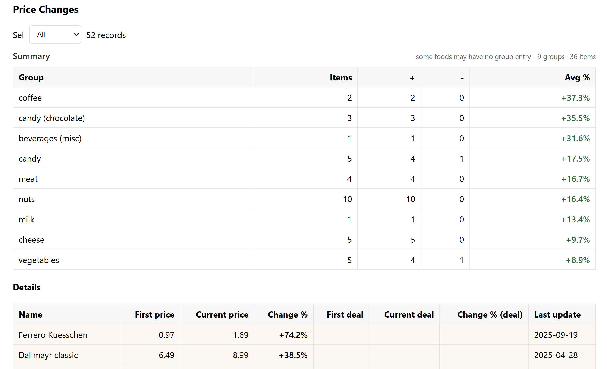
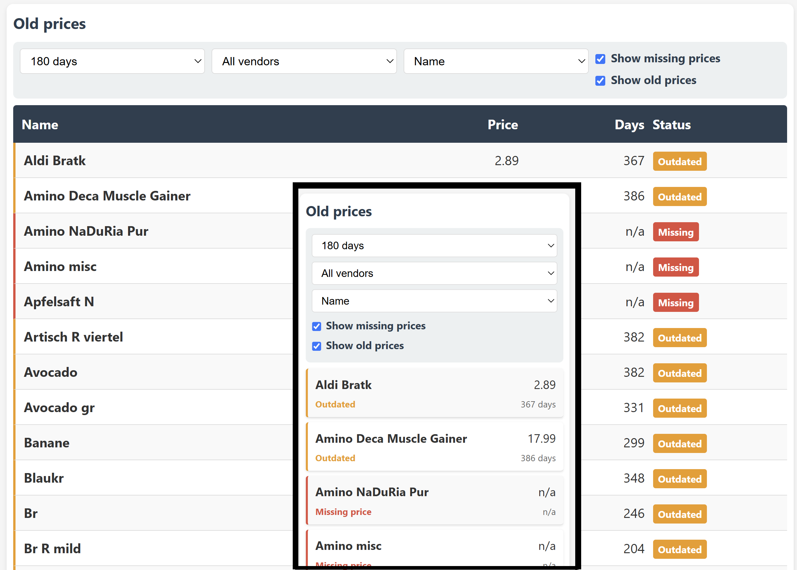

Fast PHP Mini Apps with AI
Small to medium-sized applications that solve specific problems - made fast and cost-efficient with AI
Voice agent
AI Voice agent for your website. You can add all information about your company that you want the agent to know in a simple text file. Your customers may ask questions directly on your website. Try my agent on the start page.
Quick reports
Quick reports based on your existing data with table and iOS style view for mobile. With AI in many cases done in a few hours.

Quick forms and UIs
Limited forms or UIs for specific use cases with AI in many cases done in a few hours.
Sample: View for updating price data. Identifies outdated (old) price data and missing prices. It features table layout on PC while an iOS cell style view is shown on mobile.
Sample: View for updating price data. Identifies outdated (old) price data and missing prices. It features table layout on PC while an iOS cell style view is shown on mobile.

Mid size applications
Somewhat larger "mid-size" apps are more effort. But with AI based development those often can be done in 2-3 weeks instead of months of manual development effort.
Sample app: "NinjaSnipp" for prompt management, see project page.
Sample app: "NinjaSnipp" for prompt management, see project page.

Command line tools
Quick command line tools for automation and system tasks.